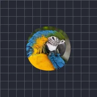

Suavizar bordas

Arredonda e suaviza as bordas das partes opacas da camada sem alterar as cores internas. Mascarar para a camada só permite que as bordas se movam para dentro.
Configurações
| Configuração | Tipo | Intervalo | Padrão |
|---|---|---|---|
| Intensidade | Número | 0 px a 300 px | 12 px |
| Mascarar para a camada | Ativado ou desativado | – | Desativado |